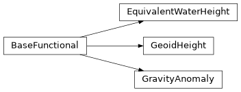

Planet object¶
- class gfeatpy.Planet(self: gfeatpy._core.Planet)¶
Bases:
pybind11_objectThis class defines a global variable that stores the properties of the central body that is under analysis
- property C20¶
Unnormalized flattening coefficient
- property ae¶
Equatorial radius, or Brillouin sphere [m]
- property mu¶
Standard gravitational parameter [m³/s²]
- property rho_e¶
Mean crustal density [kg/m³]
- property rho_w¶
Water density at Sea Level for EWH [kg/m³]
- property theta_dot¶
Angular rotational velocity [rad/s]
from gfeatpy import planet # mind the lower case
# Asign central planetary body constants to Mars
planet.mu = 42.83e12
planet.ae = 3396.2e3
planet.C20 = -1960.45e-6
planet.theta_dot = 7.088e-5
planet.rho_e = 2582
Gravity module¶
The gravity module provides different tools to handle gravity field data.
- class gfeatpy.gravity.AOD1B(self: gfeatpy._core.gravity.AOD1B)¶
- get(self: gfeatpy._core.gravity.AOD1B, datetime: gfeatpy._core.gravity.DateTime, type: gfeatpy._core.gravity.AOD1BType) gfeatpy._core.gravity.SphericalHarmonics¶
Function that retrieves the
SphericalHarmonicsobject associated to the AOD1B set indicated by the input parameters.- Parameters:
- Returns:
Object containing the associated Stokes coefficients.
- Return type:
- enum gfeatpy.gravity.AOD1BType¶
Enumeration that defines the Stokes coefficients set to be retrieved from AOD1B data.
- ATM¶
Difference between vertically integrated density of the atmosphere and the corresponding mean field.
- OCN¶
Difference between the water column contribution to ocean bottom pressure and the corresponding mean field.
- GLO¶
Sum of ATM and OCN mass anomalies.
- OBA¶
Sum of the water column contribution to the ocean bottom pressure anomalies (OCN) and the atmospheric contribution to ocean bottom pressure anomalies.
- class gfeatpy.gravity.BaseFunctional¶
BaseFunctional is an abstract class that serves as parent class to implement different gravity field functionals. For this purpose, it contains a function
degree_dependent_factorthat is overloaded by the child classes.It is employed internally in both the Global Spherical Harmonics Synthesis and the computation of degree variances. This allows for code modularity and simplifies the implementation of the different functionals.

- class gfeatpy.gravity.DateTime(self: gfeatpy._core.gravity.DateTime, year: SupportsInt, month: SupportsInt, day: SupportsInt, h: SupportsInt = 0, m: SupportsInt = 0, s: SupportsInt = 0)¶
Class that defines date and time from calendar format.
Constructor for DateTime object.
- Parameters:
year (int)
month (int)
day (int)
hours (int)
minutes (int)
seconds (int)
- class gfeatpy.gravity.EquivalentWaterHeight(self: gfeatpy._core.gravity.EquivalentWaterHeight, smoothing_radius: SupportsFloat)¶
Bases:
BaseFunctionalEquivalentWaterHeight class defines the degree common terms for computation of EWH (Wahr, 1998).
\[f(l) = \frac{a_e \rho_c W_l}{3 \rho_w} \frac{2l+1}{1+k_l'}\]The class also include the possibility to apply Gaussian smoothing with an input smoothing radius (Jekeli, 1981). The computation of the SH coefficients of the averaging function \(W_l\) follows the continuous fraction approach proposed by Piretzidis (2019).
- Inherits from:
BaseFunctional
Constructor for EquivalentWaterHeight.
- Parameters:
smoothing_radius (float) – Value at which the Gaussian spatial smoothing kernel decays to 1/2 of the initial value.
Example
Create an instance with 200 km smoothing radius:
ewh = EquivalentWaterHeight(200e3)
- class gfeatpy.gravity.GeoidHeight(self: gfeatpy._core.gravity.GeoidHeight)¶
Bases:
BaseFunctionalGeoidHeight class defines the degree common terms for computation of geoid height.
\[f(l) = a_e\]Constructor for GeoidHeight.
Example
Create a BaseFunctional instance for geoid heights:
geoid_height = GeoidHeight()
- class gfeatpy.gravity.GravityAnomaly(self: gfeatpy._core.gravity.GravityAnomaly)¶
Bases:
BaseFunctionalGravityAnomaly class defines the degree common terms for computation of gravity anomalies (in milligals).
\[f(l) = 10^5 \frac{\mu}{a_e^2} (l-1)\]Constructor for GravityAnomaly.
Example
Create a BaseFunctional instance for gravity anomalies:
gravity_anomaly = GravityAnomaly()
- class gfeatpy.gravity.GravityField(self: gfeatpy._core.gravity.GravityField, l_max: SupportsInt)¶
Bases:
SphericalHarmonicsThis is a derived class from
SphericalHarmonicsthat includes functionality to load data from .gfc files (see ICGEM website).Contructor for GravityField object.
- Parameters:
l_max (int) – Cut-off degree.
- load(self: gfeatpy._core.gravity.GravityField, filename: str) gfeatpy._core.gravity.GravityField¶
This function loads gravity field data from a .gfc file into this object.
- Parameters:
filename (string) – Path to .gfc file.
- Returns:
Object with loaded gravity field.
- Return type:
- class gfeatpy.gravity.SphericalHarmonics(self: gfeatpy._core.gravity.SphericalHarmonics, l_max: SupportsInt)¶
This class stores Spherical Harmonics coefficients data and provides utilities to process it. Data is loaded through auxiliar objects such as
GravityFieldorAOD1B.Contructor for SphericalHarmonics object. The constructor only defines the internal storing structure.
- Parameters:
l_max (int) – Cut-off degree.
- property coefficients¶
This property points to the (L+1)x(L+1) dense matrix storing the SH coefficients. The matrix structure is as follows.
\[\begin{split}\Sigma_{xx} = \begin{bmatrix} \bar{C}_{00} & \bar{S}_{11} & \cdots & \bar{S}_{L1} \\ \bar{C}_{10} & \bar{C}_{11} & \cdots & \bar{S}_{L2} \\ \vdots & \vdots & \ddots & \vdots \\ \bar{C}_{L0} & \bar{C}_{L1} & \cdots & \bar{C}_{LL} \end{bmatrix}\end{split}\]
- degree_variance(self: gfeatpy._core.gravity.SphericalHarmonics, use_sigmas: bool) Annotated[numpy.typing.NDArray[numpy.float64], '[m, 1]']¶
This function computes degree variance spectrum from the values of the SH coefficients.
\[\sigma_l^2 = \sum_{m=0}^{l} \bar{C}_{lm}^2 + \bar{S}_{lm}^2\]- Parameters:
use_sigmas (bool) – Flag to indicate if the standard deviations are used instead of the coefficients.
- gravity(self: gfeatpy._core.gravity.SphericalHarmonics, r_ecef: Annotated[numpy.typing.ArrayLike, numpy.float64, '[3, 1]']) Annotated[numpy.typing.NDArray[numpy.float64], '[3, 1]']¶
Function that evaluates the gravity vector in the Earth-Centered-Earth-Fixed frame (ECEF).
- Parameters:
r_ecef (numpy.ndarray) – 3D position in the ECEF frame.
- Returns:
3D gravity vector in the ECEF frame.
- Return type:
numpy.ndarray
- potential(self: gfeatpy._core.gravity.SphericalHarmonics, r_ecef: Annotated[numpy.typing.ArrayLike, numpy.float64, '[3, 1]']) float¶
Function that evaluates gravity field perturbing potential in the Earth-Centered-Earth-Fixed (ECEF) frame .
- Parameters:
r_ecef (numpy.ndarray) – 3D position in the ECEF frame.
- Returns:
Gravity field perturbing potential.
- Return type:
float
- rms_per_coefficient_per_degree(self: gfeatpy._core.gravity.SphericalHarmonics, use_sigmas: bool) Annotated[numpy.typing.NDArray[numpy.float64], '[m, 1]']¶
This function computes RMS per coefficient per degree from the values of the SH coefficients.
\[\delta_l = \sqrt{\sum_{m=0}^{l} \frac{\bar{C}_{lm}^2 + \bar{S}_{lm}^2}{2l+1}}\]- Parameters:
use_sigmas (bool) – Flag to indicate if the standard deviations are used instead of the coefficients.
- property sigmas¶
This property points to the (L+1)x(L+1) dense matrix storing the standard deviations of the SH coefficients. The matrix structure is equivalent to
coefficients.
- synthesis(self: gfeatpy._core.gravity.SphericalHarmonics, arg0: SupportsInt, arg1: SupportsInt, arg2: gfeatpy._core.gravity.BaseFunctional) tuple[Annotated[numpy.typing.NDArray[numpy.float64], '[m, n]'], Annotated[numpy.typing.NDArray[numpy.float64], '[m, n]'], Annotated[numpy.typing.NDArray[numpy.float64], '[m, n]']]¶
This function performs Global Spherical Harmonics Synthesis according to the input gravity field functional.
\[y(\lambda, \phi) = \sum_{l=2}^{L} \sum_{m=0}^{l} f(l) \bar{P}_{lm}(\sin{\phi}) (\bar{C}_{lm} \cos{m\lambda} + \bar{S}_{lm} \sin{m\lambda})\]It makes use of the two-step fold proposed by Rizos (1979) as well as the FFT for efficient computation.
- Parameters:
n_lon (int) – Number of nodes along the longitude direction.
n_lat (int) – Number of nodes along the latitude direction.
functional (BaseFunctional) – Gravity field functional to perform the synthesis.
- Returns:
numpy.ndarray – A 2D array with longitude values for the lon/lat grid.
numpy.ndarray – A 2D array with latitude values for lon/lat grid.
numpy.ndarray – A 2D array with functional values on the lon/lat grid.
- class gfeatpy.gravity.SphericalHarmonicsCovariance(self: gfeatpy._core.gravity.SphericalHarmonicsCovariance, l_max: SupportsInt)¶
This class stores the full covariance matrix from a gravity field solution and provides utilities to process it.
Constructor for SphericalHarmonicsCovariance object. The constructor only defines the inner structure of the matrix. Data can be load through different loading functions depending on the file type.
- Parameters:
l_max (int) – Cut-off degree.
- property Pxx¶
Attribute that stores the full covariance matrix.
- degree_variance(self: gfeatpy._core.gravity.SphericalHarmonicsCovariance) Annotated[numpy.typing.NDArray[numpy.float64], '[m, 1]']¶
This function computes degree variance spectrum from the standard deviation of the SH coefficients.
\[\sigma_l^2 = \sum_{m=0}^{l} \sigma^2(\bar{C}_{lm}) + \sigma^2(\bar{S}_{lm})\]
- from_normal(self: gfeatpy._core.gravity.SphericalHarmonicsCovariance, filename: str, scaling_factor: SupportsFloat) gfeatpy._core.gravity.SphericalHarmonicsCovariance¶
Function to fill the SH covariance matrix through inversion of the normal matrix as provided by an input Sinex file.
- Parameters:
filename (string) – Path to Sinex file that contains the normal matrix.
scaling_factor (float) – Scaling factor to be applied to the normal matrix.
- rms_per_coefficient_per_degree(self: gfeatpy._core.gravity.SphericalHarmonicsCovariance) Annotated[numpy.typing.NDArray[numpy.float64], '[m, 1]']¶
This function computes RMS per coefficient per degree from the standard deviation of the SH coefficients.
\[\delta_l = \sqrt{\sum_{m=0}^{l} \frac{\sigma^2(\bar{C}_{lm}) + \sigma^2(\bar{S}_{lm})}{2l+1}}\]
- synthesis(self: gfeatpy._core.gravity.SphericalHarmonicsCovariance, n_lon: SupportsInt, n_lat: SupportsInt, functional: gfeatpy._core.gravity.BaseFunctional) tuple[Annotated[numpy.typing.NDArray[numpy.float64], '[m, n]'], Annotated[numpy.typing.NDArray[numpy.float64], '[m, n]'], Annotated[numpy.typing.NDArray[numpy.float64], '[m, n]']]¶
This function performs covariance propagation from the SH covariance into the sphere according to the input gravity field functional.
\[\sigma_{y}(\lambda, \phi) = v P_{xx} v^T\]It makes use of the two-step fold proposed by Rizos (1979) as well as the FFT for efficient computation.
- Parameters:
n_lon (int) – Number of nodes along the longitude direction.
n_lat (int) – Number of nodes along the latitude direction.
functional (BaseFunctional) – Gravity field functional to perform the synthesis.
- Returns:
numpy.ndarray – A 2D array with longitude values for the lon/lat grid.
numpy.ndarray – A 2D array with latitude values for lon/lat grid.
numpy.ndarray – A 2D array with the commission error values for the input functional on the lon/lat grid.
Observation module¶
The observation module handles the computation of the spectral observations. For this purpose, different functionalities are defined in abstract objects and inherited towards the actual usable observation classes.
The observations require the definition of different orbital elements which are relative to the Earth frame as depicted below.

- class gfeatpy.observation.AbstractKiteSystem¶
AbstractKiteSystem class defines the base object that handles the block-kite structure of the linear system of equations along a circular repeating ground-track.
- degree_variance(self: gfeatpy._core.observation.AbstractKiteSystem) Annotated[numpy.typing.NDArray[numpy.float64], '[m, 1]']¶
This function computes degree variance spectrum from the standard deviation of the SH coefficients.
\[\sigma_l^2 = \sum_{m=0}^{l} \sigma^2(C_{lm}) + \sigma^2(S_{lm})\]
- get_N(self: gfeatpy._core.observation.AbstractKiteSystem) Annotated[numpy.typing.NDArray[numpy.float64], '[m, n]']¶
Getter for full normal matrix.
- Returns:
Full normal matrix.
- Return type:
ndarray
- get_Pxx(self: gfeatpy._core.observation.AbstractKiteSystem) Annotated[numpy.typing.NDArray[numpy.float64], '[m, n]']¶
Getter for full parameter covariance matrix.
- Returns:
Full parameter covariance matrix.
- Return type:
ndarray
- get_sigma_x(self: gfeatpy._core.observation.AbstractKiteSystem) Annotated[numpy.typing.NDArray[numpy.float64], '[m, n]']¶
Returns the compact matrix storing the standard deviation of the parameters, the SH coefficients. See
coefficientsfor the matrix structure.
- rms_per_coefficient_per_degree(self: gfeatpy._core.observation.AbstractKiteSystem) Annotated[numpy.typing.NDArray[numpy.float64], '[m, 1]']¶
This function computes RMS per coefficient per degree from the standard deviation of the SH coefficients.
\[\delta_l = \sqrt{\sum_{m=0}^{l} \frac{\sigma^2(C_{lm}) + \sigma^2(S_{lm})}{2l+1}}\]
- set_kaula_regularization(self: gfeatpy._core.observation.AbstractKiteSystem, K: SupportsFloat = 1e-05) None¶
This function introduces Kaula’s rule to solve the linear system. It provides a constraint on the standard deviation of the parameters as defined by Kaula’s power rule:
\[\sigma\{\bar{C}_{lm}, \bar{S}_{lm}\} = \frac{K}{l^2}\]- Parameters:
K (float) – Kaula’s constant for the empirical Kaula’s rule”
- set_solution_time_window(self: gfeatpy._core.observation.AbstractKiteSystem, time_window: SupportsFloat) None¶
Setter for the time window \(T\) of data accumulation that contributes to a gravity field solution. It is therefore the sampling time of the gravity field. It defines the frequency resolution \(\Delta f=1/T\) that is employed to compute the error in the lumped coefficients from the amplitude spectral density.
By default, the solution time window is set to the repeatability period of the ground-track.
- Parameters:
time_window (float) – Solution time window in days.
Warning
Note that when there is not a commensurability with the ground-track repeatability time, the solutions might be inaccurate, since the periodicity of the orbit is not fulfilled. Solutions with a time window lower than the ground-track repeatability time are highly unrecommended.
- solve(self: gfeatpy._core.observation.AbstractKiteSystem) None¶
This function solves for the parameter covariance \(P_{xx}\) making use of least squares error propagation.
\[P_{xx} = (H^T P_{yy}^{-1} H + P_{cc}^{-1})^{-1}\]Cholesky decomposition allows for leveraging the symmetry of the normal matrix for efficient inversion.
- synthesis(self: gfeatpy._core.observation.AbstractKiteSystem, n_lon: SupportsInt, n_lat: SupportsInt, functional: BaseFunctional) tuple[Annotated[numpy.typing.NDArray[numpy.float64], '[m, n]'], Annotated[numpy.typing.NDArray[numpy.float64], '[m, n]'], Annotated[numpy.typing.NDArray[numpy.float64], '[m, n]']]¶
This function performs covariance propagation from the parameter covariance into the sphere according to the input gravity field functional.
\[\sigma_{y}(\lambda, \phi) = v P_{xx} v^T\]It makes use of the two-step fold proposed by Rizos (1979) for efficient computation. It does not use FFT since the sparsity of the design and parameter covariance matrices makes it less efficient than summation along the dense blocks.
- Parameters:
n_lon (int) – Number of nodes along the longitude direction.
n_lat (int) – Number of nodes along the latitude direction.
functional (BaseFunctional) – Gravity field functional to perform the synthesis.
- Returns:
numpy.ndarray – A 2D array with longitude values for the lon/lat grid.
numpy.ndarray – A 2D array with latitude values for lon/lat grid.
numpy.ndarray – A 2D array with the commission error values for the input functional on the lon/lat grid.
- synthesis_average(self: gfeatpy._core.observation.AbstractKiteSystem, functional: BaseFunctional) float¶
This function computes the average on the sphere of the comission error of the input gravity field functional. For this purpose, orthogonal properties of spherical harmonics are leveraged.
\[\hat{\sigma}_{y} = \frac{1}{4\pi} \int_{\Omega} \sigma_y(\lambda, \phi) \, d\Omega\]- Parameters:
functional (BaseFunctional) – Gravity field functional to perform the synthesis.
- Returns:
Commission error spherical average for input functional.
- Return type:
float
- class gfeatpy.observation.AlongTrack(self: gfeatpy._core.observation.AlongTrack, l_max: SupportsInt, Nr: SupportsInt, Nd: SupportsInt, I: SupportsFloat, we_0: SupportsFloat = 0, wo_0: SupportsFloat = 0)¶
Bases:
BaseObservationThis class defines the position displacement observation in the along-track direction.
Constructor for the AlongTrack class.
- Parameters:
l_max (int) – Cut-off degree.
Nr (int) – Number of orbital revolutions per ground-track repeatability period.
Nd (int) – Nodal days per ground-track repeatability period.
I (float) – Inclination [rad].
we_0 (float) – Initial Earth-fixed longitude of the ascending node [rad].
wo_0 (float) – Initial argument of latitude [rad].
- class gfeatpy.observation.BaseObservation¶
Bases:
AbstractKiteSystemBaseObservation class defines the base object for any observation along a circular orbit. It is a derived class from
AbstractKiteSystem, which provides the structure of the linear system of equations along a circular repeating ground-track. This class defines some additional settings that depend on the observations themselves, such as the vertical length of the block-design matrices, the actual orbital radius or the amplitude spectral density for the lumped coefficients. Moreover, it provides a framework to define any arbitrary design matrix.- get_H(self: gfeatpy._core.observation.BaseObservation) Annotated[numpy.typing.NDArray[numpy.float64], '[m, n]']¶
Getter for the full design matrix.
- Returns:
Full design matrix.
- Return type:
ndarray
- get_Pyy(self: gfeatpy._core.observation.BaseObservation) Annotated[numpy.typing.NDArray[numpy.float64], '[m, n]']¶
Getter for the full observation covariance matrix.
- Returns:
Full observation covariance matrix.
- Return type:
ndarray
- get_asd(self: gfeatpy._core.observation.BaseObservation) collections.abc.Callable[[SupportsFloat], float]¶
Getter for the observation error in terms of Amplitude Spectral Denisty (ASD).
- Returns:
ASD function
- Return type:
Callable[[float], float]
- get_radius(self: gfeatpy._core.observation.BaseObservation) float¶
Getter for orbital radius associated to the Repeating Ground-Track selected.
- Returns:
Orbital radius associated to the Repeating Ground-Track of the observation.
- Return type:
float
- get_we_0(self: gfeatpy._core.observation.BaseObservation) float¶
Getter for the initial planet-centred longitude associated to the Repeating Ground-Track selected.
- Returns:
Initial planet-centred longitude associated to the Repeating Ground-Track of the observation.
- Return type:
float
- get_wo_0(self: gfeatpy._core.observation.BaseObservation) float¶
Getter for the initial argument of latitude associated to the Repeating Ground-Track selected.
- Returns:
Initital argument of latitude associated to the Repeating Ground-Track of the observation.
- Return type:
float
- set_observation_error(self: gfeatpy._core.observation.BaseObservation, asd: collections.abc.Callable[[SupportsFloat], float]) None¶
This function sets the lumped coefficients error in the frequency domain from the Amplitude Spectral Density of the observation (Sneeuw, 2000).
\[\sigma_{km} = \int_{f_{km}+\Delta f/2}^{f_{km}+\Delta f/2} A^2(f) \, df \approx A^2(f_{km}) \Delta f\]- Parameters:
asd (Callable[[float], float]) – Function that defines the amplitude spectral density for an input frequency.
- simulate_observations(self: gfeatpy._core.observation.BaseObservation, gravity_field: GravityField) dict[int, tuple[float, float]]¶
This function simulates analytically the values of the lumped coefficients \(A_{km}, B_{km}\) from an input
GravityField.- Parameters:
gravity_field (GravityField) – Gravity field object to fill the parameter vector \(x\).
- Returns:
Dictionary that contains the integered frequencies as keys and the associated \(A_{km}, B_{km}\) coefficients as values.
- Return type:
dict[int, tuple[float, float]]
- class gfeatpy.observation.Constellation(self: gfeatpy._core.observation.Constellation, l_max: typing.SupportsInt, Nr: typing.SupportsInt, Nd: typing.SupportsInt, I: typing.Annotated[numpy.typing.ArrayLike, numpy.float64, "[m, 1]"], rho_0: typing.SupportsFloat, longitude_policy: gfeatpy._core.observation.LongitudePolicy = <LongitudePolicy.INTERLEAVING: 0>)¶
Bases:
MultiObservationThis class wraps the
MultiObservationclass to handle constellations in a simplified way.Note
This class assumes that the observation type is
Collinear. Future versions will extend the class to any observation type.- Parameters:
l_max (int) – Cut-off degree.
Nr (int) – Number of orbital revolutions per ground-track repeatability period.
Nd (int) – Nodal days per ground-track repeatability period.
I (list[float]) – List of inclinations of the different repeating orbits [rad].
rho_0 (float) – Nominal intersatellite distance [m].
longitude_policy (LongitudePolicy) – Longitude separation policy.
- set_observation_error(self: gfeatpy._core.observation.Constellation, range_instrument_asd: collections.abc.Callable[[SupportsFloat], float], accelerometer_asd: collections.abc.Callable[[SupportsFloat], float]) None¶
An important error contribution to the range observation error is also the error in the accelerometer. This error propagates to the range observation. This function accounts for this propagation internally.
- Parameters:
range_instrument_asd (Callable[[float], float]) – Ranging instrument amplitude spectral density for an input frequency.
accelerometer_asd (Callable[[float], float]) – Accelerometer amplitude spectral density for an input frequency.
- class gfeatpy.observation.GPS(self: gfeatpy._core.observation.GPS, l_max: SupportsInt, Nr: SupportsInt, Nd: SupportsInt, I: SupportsFloat, we_0: SupportsFloat, wo_0: SupportsFloat)¶
Bases:
MultiObservation- set_observation_error(self: gfeatpy._core.observation.GPS, sigma_u: SupportsFloat, sigma_v: SupportsFloat, sigma_w: SupportsFloat, ddu_asd: collections.abc.Callable[[SupportsFloat], float], ddv_asd: collections.abc.Callable[[SupportsFloat], float], ddw_asd: collections.abc.Callable[[SupportsFloat], float]) None¶
Set the observation error for each component of the GPS observation.
- Parameters:
sigma_u (float) – Standard deviation of the radial component
sigma_v (float) – Standard deviation of the along-track component
sigma_w (float) – Standard deviation of the cross-track component
ddu_asd (Callable[[float], float]) – Amplitude spectral density of the radial acceleration
ddv_asd (Callable[[float], float]) – Amplitude spectral density of the along-track acceleration
ddw_asd (Callable[[float], float]) – Amplitude spectral density of the cross-track acceleration
- enum gfeatpy.observation.LongitudePolicy¶
Enumeration that defines the two built-in longitude separation policies for the
Constellationclass.- INTERLEAVING¶
The ground-tracks are perfectly interleaved at the equator.
- OVERLAPPING¶
The ground-tracks overlap at the equator.
- class gfeatpy.observation.MultiObservation(self: gfeatpy._core.observation.MultiObservation, l_max: SupportsInt, Nr: SupportsInt, Nd: SupportsInt, observations: collections.abc.Sequence[gfeatpy._core.observation.BaseObservation])¶
Bases:
AbstractKiteSystemThis class takes a list of attr:~gfeatpy.observation.BaseObservation objects to compute the combined performance of multiple observations.
Warning
To maintain the simplicity of the block-kite system, this class only supports observations with the same associated ground-track repeatability conditions (same number of revolutions \(N_r\) as well as nodal days \(N_d\)). In this way, the individual block-kite structure of every observation can be applied to the system of combined observations.
Constructor for MultiObservation class
- Parameters:
l_max (int) – Cut-off degree.
Nr (int) – Number of orbital revolutions per ground-track repeatability period.
Nd (int) – Nodal days per ground-track repeatability period.
observations (list[BaseObservation]) – List of single observation objects to be combined
- get_observations(self: gfeatpy._core.observation.MultiObservation) list[gfeatpy._core.observation.BaseObservation]¶
Getter for the individual observations
- Returns:
List of single observation objects that form the combined observation
- Return type:
list[BaseObservation]
- class gfeatpy.observation.Potential(self: gfeatpy._core.observation.Potential, l_max: SupportsInt, Nr: SupportsInt, Nd: SupportsInt, I: SupportsFloat, we_0: SupportsFloat = 0, wo_0: SupportsFloat = 0)¶
Bases:
BaseObservationThis class defines the perturbing potential observation for a circular orbit.
Constructor for the Radial class.
- Parameters:
l_max (int) – Cut-off degree.
Nr (int) – Number of orbital revolutions per ground-track repeatability period.
Nd (int) – Nodal days per ground-track repeatability period.
I (float) – Inclination [rad].
we_0 (float) – Initial Earth-fixed longitude of the ascending node [rad].
wo_0 (float) – Initial argument of latitude [rad].
- class gfeatpy.observation.Radial(self: gfeatpy._core.observation.Radial, l_max: SupportsInt, Nr: SupportsInt, Nd: SupportsInt, I: SupportsFloat, we_0: SupportsFloat = 0, wo_0: SupportsFloat = 0)¶
Bases:
BaseObservationThis class defines the position displacement observation in the radial direction.
Constructor for the Radial class.
- Parameters:
l_max (int) – Cut-off degree.
Nr (int) – Number of orbital revolutions per ground-track repeatability period.
Nd (int) – Nodal days per ground-track repeatability period.
I (float) – Inclination [rad].
we_0 (float) – Initial Earth-fixed longitude of the ascending node [rad].
wo_0 (float) – Initial argument of latitude [rad].
- class gfeatpy.observation.Range(self: gfeatpy._core.observation.Range, l_max: SupportsInt, Nr: SupportsInt, Nd: SupportsInt, I: SupportsFloat, rho_0: SupportsFloat, we_0: SupportsFloat = 0, wo_0: SupportsFloat = 0)¶
Bases:
BaseObservationConstructor for the Range class.
- Parameters:
l_max (int) – Cut-off degree.
Nr (int) – Number of orbital revolutions per ground-track repeatability period.
Nd (int) – Nodal days per ground-track repeatability period.
I (float) – Inclination [rad].
rho_0 (float) – Nominal intersatellite distance [m].
we_0 (float) – Initial Earth-fixed longitude of the ascending node [rad].
wo_0 (float) – Initial argument of latitude [rad].
- set_observation_error(self: gfeatpy._core.observation.Range, range_instrument_asd: collections.abc.Callable[[SupportsFloat], float], accelerometer_asd: collections.abc.Callable[[SupportsFloat], float]) None¶
An important error contribution to the range observation error is also the error in the accelerometer. This error propagates to the range observation. This function accounts for this propagation internally.
- Parameters:
range_instrument_asd (Callable[[float], float]) – Ranging instrument amplitude spectral density for an input frequency.
accelerometer_asd (Callable[[float], float]) – Accelerometer amplitude spectral density for an input frequency.
Plotting module¶
- class gfeatpy.plotting.DegreeAmplitudePlotter(figsize, functional=None)[source]¶
Bases:
objectClass to plot the RMS per coefficient per degree spectrum
It allows for adding as many objects as needed with a lot of flexibility for formatting
Constructor for DegreeAmplitudePlotter class.
- Parameters:
figsize (tuple) – matplotlib figure size
functional (BaseFunctional) – BaseFunctional object to scale be applied to the RMS values
- add_item(object, *args, show_error=None, **kwargs)[source]¶
Add an item to the degree amplitude plot.
- Parameters:
object – Any object containing SH coefficients or errors
args – Additional positional arguments to be passed to ax.semilogy
show_error – A boolean to indicate whether to plot the error (True) or the signal (False). If None, the signal is plotted by default.
kwargs – Additional keyword arguments to be passed to ax.semilogy
- class gfeatpy.plotting.GroundTrackExplorer(h_min, h_max, Nd_max)[source]¶
Bases:
objectClass to explore repeating ground tracks for the global planet object as defined in gfeatpy.planet. It is essential for orbit selection since Nr and Nd are input arguments for analytical observations within gfeatpy.observation module.
Constructor for GroundTrackExplorer class.
- Parameters:
h_min (
float) – Minimum orbit height [m]h_max (
float) – Maximum orbit height [m]Nd_max (
int) – Maximum number of nodal days to consider
- gfeatpy.plotting.ground_track(Nr, Nd, I, we_0=0, wo_0=0, samples_per_rev=3000, **kwargs)[source]¶
Function to plot any repeating ground track. Generally to be used along with
gfeatpy.plotting.synthesis()to observe ground-track correlation- Parameters:
Nr – Number of revolutions
Nd – Nodal days
I – Inclination [rad]
we_0 – Initial Earth-fixed longitude of ascending node [rad]
wo_0 – Initial Earth-fixed argument of latitude [rad]
samples_per_rev – Samples per revolution (higher = smoother ground-track)
kwargs – Additional keyword arguments to be passed to plt.scatter
- gfeatpy.plotting.pyramid(base_object, colormap='jet')[source]¶
Function to plot the SH coefficients in a pyramid format.
- Parameters:
base_object – Any object containing SH coefficients or errors
colormap – Colormap to use for plotting
- gfeatpy.plotting.synthesis(base_object, n_lon, n_lat, functional, colormap='seismic', z_max=None)[source]¶
Plot the global SH synthesis on an Earth map. (To DO: add option to remove Earth map background)
- Parameters:
base_object – Any object containing SH coefficients or errors
n_lon (int) – Number of longitude points
n_lat (int) – Number of latitude points
functional (BaseFunctional) – Any synthesis functional: GravityAnomaly, EquivalentWaterHeight, GeoidHeight
colormap (str) – Colormap to use for plotting
z_max (float) – Cutting value for the color scale
Utils module¶
- gfeatpy.utils.R1(arg0: SupportsFloat) Annotated[numpy.typing.NDArray[numpy.float64], '[3, 3]']¶
- gfeatpy.utils.R2(arg0: SupportsFloat) Annotated[numpy.typing.NDArray[numpy.float64], '[3, 3]']¶
- gfeatpy.utils.R3(arg0: SupportsFloat) Annotated[numpy.typing.NDArray[numpy.float64], '[3, 3]']¶
- class gfeatpy.utils.Verbosity(self: gfeatpy._core.utils.Verbosity, value: SupportsInt)¶
Bases:
pybind11_objectMembers:
Silent
Info
- property name¶
- gfeatpy.utils.aop_dot(arg0: SupportsFloat, arg1: SupportsFloat, arg2: SupportsFloat) float¶
- gfeatpy.utils.cart2sph(arg0: Annotated[numpy.typing.ArrayLike, numpy.float64, '[3, 1]']) Annotated[numpy.typing.NDArray[numpy.float64], '[3, 1]']¶
- gfeatpy.utils.eci2ecrf(*args, **kwargs)¶
Overloaded function.
eci2ecrf(r_eci: typing.Annotated[numpy.typing.ArrayLike, numpy.float64, “[3, 1]”], t: typing.SupportsFloat) -> typing.Annotated[numpy.typing.NDArray[numpy.float64], “[3, 1]”]
eci2ecrf(r_eci: typing.Annotated[numpy.typing.ArrayLike, numpy.float64, “[3, 1]”], v_eci: typing.Annotated[numpy.typing.ArrayLike, numpy.float64, “[3, 1]”], t: typing.SupportsFloat) -> tuple[typing.Annotated[numpy.typing.NDArray[numpy.float64], “[3, 1]”], typing.Annotated[numpy.typing.NDArray[numpy.float64], “[3, 1]”]]
- gfeatpy.utils.ecrf2eci(*args, **kwargs)¶
Overloaded function.
ecrf2eci(r_ecrf: typing.Annotated[numpy.typing.ArrayLike, numpy.float64, “[3, 1]”], t: typing.SupportsFloat) -> typing.Annotated[numpy.typing.NDArray[numpy.float64], “[3, 1]”]
ecrf2eci(r_ecrf: typing.Annotated[numpy.typing.ArrayLike, numpy.float64, “[3, 1]”], v_ecrf: typing.Annotated[numpy.typing.ArrayLike, numpy.float64, “[3, 1]”], t: typing.SupportsFloat) -> tuple[typing.Annotated[numpy.typing.NDArray[numpy.float64], “[3, 1]”], typing.Annotated[numpy.typing.NDArray[numpy.float64], “[3, 1]”]]
- gfeatpy.utils.ma_dot(arg0: SupportsFloat, arg1: SupportsFloat, arg2: SupportsFloat) float¶
- gfeatpy.utils.raan_dot(arg0: SupportsFloat, arg1: SupportsFloat, arg2: SupportsFloat) float¶
- gfeatpy.utils.rfft(arg0: Annotated[numpy.typing.ArrayLike, numpy.float64, '[m, 1]']) Annotated[numpy.typing.NDArray[numpy.complex128], '[m, 1]']¶
- gfeatpy.utils.sma_from_rgt(arg0: SupportsInt, arg1: SupportsInt, arg2: SupportsFloat, arg3: SupportsFloat, arg4: SupportsFloat, arg5: SupportsInt, arg6: SupportsFloat, arg7: SupportsFloat) float¶
- gfeatpy.utils.sph2cart(arg0: Annotated[numpy.typing.ArrayLike, numpy.float64, '[3, 1]']) Annotated[numpy.typing.NDArray[numpy.float64], '[3, 1]']¶